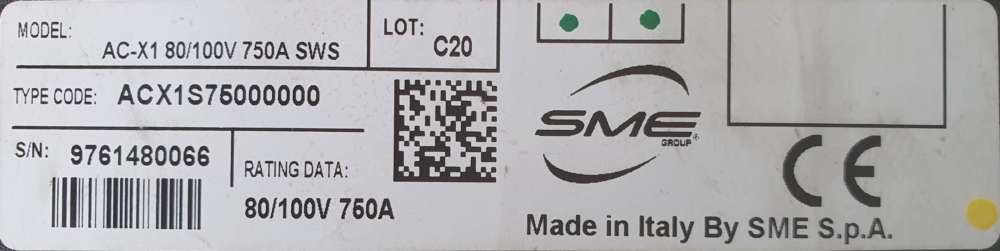

Anhang E: Motor Control Unit (MCU)¶
Typenschild¶

CAN Open Network¶
Baudrate: 500k
Inverter CanBus Meldungen¶


NEU! TODO:
TPDO 1 (0x239) -- Intervall: Fast (100ms / 10Hz)
Hier landen alle Variablen, die du für flüssige Dashboard-Anzeigen (Drehzahlmesser, Powermeter) und sofortige Leistungsberechnungen brauchst.
- Byte 0--1 (Word): Motor Speed (rpm)
- Byte 2--3 (Word): Motor 1 - Torque Word % (signed:
-100%bis+100%) - Byte 4 (Byte): Motor Temperature (°C)
- Byte 5 (Byte): Inverter Temperature (°C)
- Byte 6 (Byte): Fault Level
- Frei: Byte 7 (z.B. für ein Status-Byte)
TPDO 2 (0x240) -- Intervall: Medium (250ms / 4Hz)¶
Hier landen die mächtigen Bitmasken und Betriebsstundenzähler. Sie ändern sich nicht im Millisekundentakt, sind aber für die Diagnose unersetzlich.
- Byte 0--1 (Word): System Flags
- Byte 2--3 (Word): Motor Flags
- Byte 4-5 (WORD): System Key Ontime (Betriebsstunden seit Zündung ein)
MCU Konfiguration zum Auslesen der BMS Daten über Proxy BMS.

 Todo: Stop Flag bit0 bei IMD fault ergänzt!
Todo: Stop Flag bit0 bei IMD fault ergänzt!
Code-Implementierung des Software-Überlastschutzes (VCU)¶
Die VCU (ESP32 / Lilygo T485) liest kontinuierlich die Motordrehzahl (telemetryData.motorRPM) über die CAN-Bus-TPDOs (Real ID 239) des Inverters aus. In der zyklischen Funktion zur Übertragung der BMS-Proxy-Daten (send_proxy_bms_data(), CAN-ID 0x246) wird der Skalierungsfaktor für das Drehmoment (limit_percent) in Echtzeit berechnet und an den Inverter gesendet.
Quellcode-Auszug (C++):
void send_proxy_bms_data() {
uint16_t soc_hyper9 = 0;
int16_t current_da = 0;
uint8_t status = 0;
uint8_t limit_percent = 100;
if (xSemaphoreTake(dataMutex, pdMS_TO_TICKS(20)) == pdTRUE) {
soc_hyper9 = (uint16_t)((telemetryData.bmsSoC / 100.0f) * 32768.0f);
current_da = (int16_t)(telemetryData.bmsCurrent * 10.0f);
// -- DYNAMIC CURRENT LIMITING (200A PROTECT)
if (telemetryData.motorRPM > 1272) {
uint32_t calculated_limit = 127240 / telemetryData.motorRPM;
limit_percent = (uint8_t)calculated_limit;
if (limit_percent > 100) limit_percent = 100;
if (limit_percent < 10) limit_percent = 10; // Lowest value, to ensure
propulsion
} else {limit_percent = 100; // Maximum Torque at Start with less than
1272 U/min}
// BMS-Warning have always highest priority
if (telemetryData.bmsHighTempWarn && limit_percent > 50) {limit_percent = 50;
} else if (telemetryData.bmsLowVoltageWarn && limit_percent > 40) {limit_percent = 40;}
// -- DRIVE INHIBIT (INTERLOCK) LOGIC --
bool cableConnected = (telemetryData.bmsStatus == 0x04 || telemetryData.isCharging);
bool systemFault = (telemetryData.selfTestResult != 0 || telemetryData.bmsHardwareFault);
if (cableConnected || telemetryData.isLocked || systemFault) {status |= (1 << 5); // DRIVE INHIBIT ACTIVATED
} else if (limit_percent < 100) {status |= (1 << 1); // LIMIT MODE
} else {status |= (1 << 2); // NORMAL MODE}
if (telemetryData.isCharging) status |= (1 << 3);
xSemaphoreGive(dataMutex);
}
twai_message_t msg = {0};
msg.identifier = HYPER9_PROXY_ID;
msg.data_length_code = 8;
msg.data[0] = (uint8_t)(soc_hyper9 >> 8);
msg.data[1] = (uint8_t)(soc_hyper9 & 0xFF);
msg.data[2] = (uint8_t)(current_da >> 8);
msg.data[3] = (uint8_t)(current_da & 0xFF);
msg.data[4] = status;
msg.data[5] = limit_percent; // dynamic calculated limit send to Inverter
twai_transmit(&msg, pdMS_TO_TICKS(5));
}
Inverter Digital-Ausgänge¶

K1-30 -- Zusatzlüfter Inverter-Kühlkreis ON/OFF¶
Einschalttemperatur: 78°C, Ausschalttemperatur: 68°C
K1-31 -- tbd¶
Inverter Digital-Eingänge¶
K1 - 4 Interlock K1 - 5 Vorwärtsfahrt Akteur: RND Schalter Ort: Mittelkonsole
K1 - 6 Rückwärtsfahrt Akteur: RND Schalter Ort: Mittelkonsole
K1- 7 Rekuperation 0% Akteur: Recu Schalter Ort: Mittelkonsole
K1-18 Pedal Bremse Akteur: Bremslicht über Relais Ort: Pedale (Relaiseinheit)
K1-19 tbd